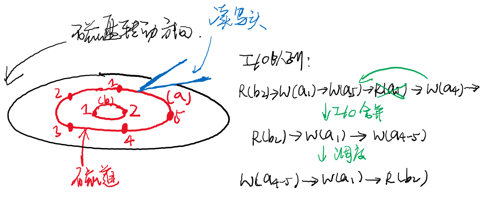
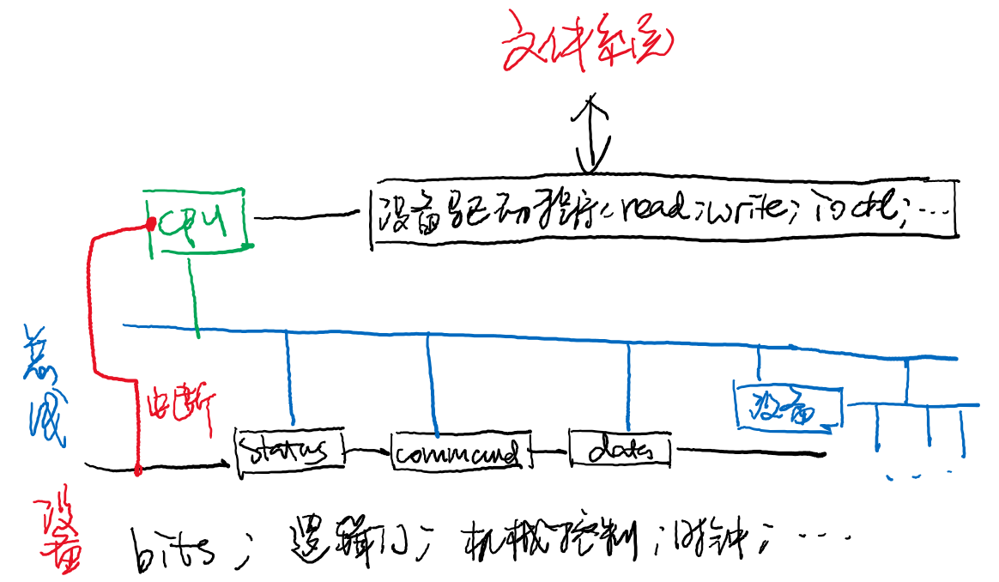
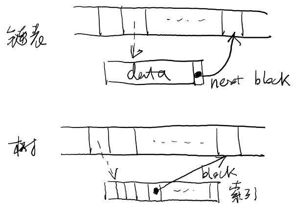

public: True class: center, middle # 文件系统实现 蒋炎岩 <jyy@nju.edu.cn> 南京大学计算机软件研究所 --- # 本讲概述 > 文件系统是支持文件和目录操作的.red[数据结构] > > * 文件实现磁盘的虚拟化 > * 目录实现文件的分类归档 * 在内存中实现这样的数据结构是相对容易的(procfs) * 如何在磁盘上持久地保存这样的数据结构？ * 磁盘：read(#blk, data), write(#blk, data) * FSAPI：mkdir, link, unlink, open, read, write, lseek, ... * 如何bridge the gap？ --- class: center, middle # 块设备 --- # 块设备 块设备 = 固定大小的块(block)的数组 (存储设备)；支持： * read(#blk, data) * write(#blk, data) ---- 查看块大小 * `blockdev --getbsz /dev/sda2` (通常4KB) * 思考题：.green[如何知道一个设备的块大小？] --- # 块设备 (cont'd) 上哪里找呢？sysfs！`/sys/block/*` * dev - 设备编号(major:minor) * stat - [I/O统计数据](https://www.kernel.org/doc/Documentation/iostats.txt) * size - 大小 (in sectors, i.e., x 512B) * ... --- # 块设备API 进程/线程(通常是文件系统实现)向存储设备提交I/O request (block读/写) * request首先进入设备的队列 * 经过调度器调度后，执行设备上的I/O (DMA) ---- 思考题：.green[为什么需要调度]？ -- count: false * 保证多进程之间的公平性/优先级 * I/O操作的合并 * 参考`/sys/block/xxx/queue` * loop-back device = none; Flash = noop deadline [cfq]; ... --- # Block I/O调度 I/O请求优化 + 兼顾进程优先级和公平 * 例子：按照“电梯”方式寻道 <center></center> --- # Block I/O调度 (cont'd) 这件事不该归操作系统管 * 磁盘的读/写特性差异太大了 * SSD vs. HDD vs. USB Flash * 每个磁盘的内部特性又不同，需要不同参数 * 应该是磁盘里的系统管(毕竟它最懂磁盘的性能) ---- 操作系统管什么？ * 桌面系统：保证进程尽可能公平地获得I/O操作(类似CFS) * 服务器/虚拟化环境：只做请求优化，不做额外的调度(FIFO) --- class: center, middle # 实现文件系统：任务回顾 --- # 文件系统：设备上的抽象层 使用块设备API (read/write requests)实现文件系统这一.red[数据结构]的各种操作 * 目录操作：mkdir, link, unlink, create * 文件操作：open, close, read, write, lseek <center></center> --- # So Easy! 这压根就不是操作系统课的内容 * 用数据结构的知识就可以解决了 * 思考题：.green[为什么要在操作系统里讨论？] --- class: center, middle # 实现文件系统 (1): 虚拟磁盘 --- # 虚拟磁盘 文件 = 虚拟的磁盘 * .red[数据块的数组]，支持read, write, lseek操作 * .red[元数据] (大小固定)：大小、访问权限、修改时间…… ---- 先不考虑元数据的存储…… * 思考题：如何实现虚拟磁盘？ --- # 虚拟磁盘：链表 & 树 用数据结构里学过的知识实现就好了嘛！ * 只需要.red[balloc()]和.red[bfree()]，就能轻松实现： <center></center> --- # 虚拟磁盘：balloc & bfree 想起`std::bitset<N>`？ * 在磁盘里划分一块专门的区域，每个bit代表每个块是否可用 * 假设：4KB block, 1TB磁盘 = 256M个blocks * 4KB = 32768 bits * 8192 blocks就能表示整个磁盘块的使用情况 --- class: center, middle # 实现文件系统 (2): 目录文件 --- # 目录文件 首先，假设系统里的每个文件(虚拟磁盘)都有.red[唯一的编号(id)] * 稍后我们讨论如何维护这个编号 * 目录 = 文件名 → 文件id的映射 (这个机制天然支持链接) ---- 目录也是文件 * 用文件(虚拟磁盘)来存储key-value mapping * 支持以下操作： * `value = get(key)` (路径解析) * `set(key, value)` (link) * `delete(key)` (unlink) * `get_keys()` (遍历目录中的文件) --- # 目录文件实现 把虚拟磁盘看成`_heap = { start, end }` * 实现目录文件就是OSLab1 (...) * 额外需求：`get_keys()`, `get()`应当高效 ---- ```c struct disk_file { uint32_t value; char key[0]; }; void set(const char *key, uint32_t value) { struct disk_file *f = kalloc(sizeof(disk_file) + strlen(key) + 1); f->value = value; strcpy(f->key, key); // keep f in a safe place } ``` --- # 如果你想实现得简单一点 ```c struct disk_file { char key[MAX_FNAME_LEN]; uint32_t value; }; ``` ---- * `get`/`get_keys`: 遍历所有的`disk_file` * `delete`: 把相应`disk_file`的key设置成`\0` * `set`: 如果找到可用的`disk_file`，写入；否则追加写在文件末尾 --- class: center, middle # 实现文件系统 (3): 元数据 --- # 补上之前缺少的部分 我们希望文件有 * 唯一的一个.red[编号] * .red[元数据]信息 * 类型：是否为目录 * 数据：大小、权限、访问时间、链接数量 * 链表实现：链表的第一个块；树实现：索引块的编号 ---- UNIX：每个文件用一个inode (index node)表示 * `ls -i`可以查看inode编号; `stat`查看文件元数据 --- # 元数据(inode)的存储 * 在磁盘用单独区域统一存储、统一管理 * 文件id = inode编号 ---- * 存储在目录文件中 * 文件id = 文件的第一块编号 ---- * 存储在文件头部 * 文件id = 文件的第一块编号 ---- 思考题：.green[分别有什么好处/坏处？] --- class: center, middle # Putting Them Together --- # 实现文件系统 实现文件系统需要考虑以下因素： * .red[虚拟磁盘的数据结构] (链表、树、……) * .blue[目录文件的数据结构] * .green[inode的表示和存储] * balloc/bfree的实现 ---- 根据这些，我们不难设计出自己的文件系统了！ --- # The Operating System Part 为什么文件系统是操作系统的一部分？ * .red[抛开workload谈优化就是耍流氓] ---- 文件系统的实际需求 * 在任何情况下的性能都尽可能地好 * 可能存在的情形：超大的文件、目录下上百万个文件、…… * workloads：读/写文件、频繁随机读、频繁目录操作、频繁元数据操作、…… * 尽可能可靠 * 磁盘不太靠得住，万一丢数据就可怕了 ---- Open Discussions: .green[如何设计文件系统？] --- # 当然，最后还要加上并发 文件系统是一个底层块设备I/O可能乱序、历经层层缓存、需要考虑容错(崩溃一致性)、性能至关重要、行为极其复杂、标准尚未统一的.red[并发]数据结构 (???) .center[<img src="../static/wiki/os/2019/img/why.jpg" width="400px"/>]